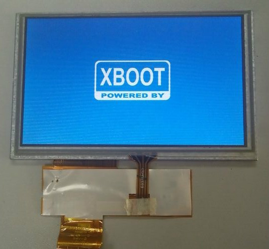

前言
此篇为少量或无需配置的开发，可帮助您快速上手，串口输出、点屏等操作确认
Nano 完好~
具体详细配置与解释说明，将在后文进行较为详细的介绍；
如果您和笔者一样是个小白萌新，希望能给您的学习提供一点小小的tips；
如果您已熟悉此流程，快速浏览即可 :)
笔者所用环境为：
- ubuntu 16.04 LTS 64位
对于本节内容，如有疑问，欢迎到 Bootloader 与 RTOS
使用交流帖 提问或分享经验。
u-boot 初体验
安装交叉编译链
首先需要安装交叉编译链：
# 此处为获取7.2.1版本，您可获取其他版本或者通过链接直接下载
wget http://releases.linaro.org/components/toolchain/binaries/7.2-2017.11/arm-linux-gnueabi/gcc-linaro-7.2.1-2017.11-x86_64_arm-linux-gnueabi.tar.xz
tar -vxJf gcc-linaro-7.2.1-2017.11-x86_64_arm-linux-gnueabi.tar.xz
sudo cp -r ./gcc-linaro-7.2.1-2017.11-x86_64_arm-linux-gnueabi /opt/
sudo vim /etc/bash.bashrc
# 在文件末尾 添加以下内容
PATH="$PATH:/opt/gcc-linaro-7.2.1-2017.11-x86_64_arm-linux-gnueabi/bin"
# 添加完毕
# 使路径生效
source /etc/bash.bashrc
此时可用 arm-linux-gnueabi-gcc -v进行测试；若普通用户状态下没有成功，通过 sudo su切换到root用户再尝试；
编译 u-boot
然后从github上拉取对 Nano 进行了适配的 u-boot：
sudo apt-get install git
git clone https://github.com/Lichee-Pi/u-boot.git
cd u-boot
# 查看分支
git branch -a
# 切换到 Nano 分支
git checkout nano-v2018.01
u-boot对于新手来说目录层级稍显复杂，您可参考下表进行快速的熟悉和目标文件定位
.
├── api //封装一些平台无关的操作，如字符串打印，显示，网络，内存
├── arch //以平台架构区分
│ ├──arm
│ │ └──cpu
│ │ │ └──arm926ejs
│ │ │ │ └──sunxi //cpu相关的一些操作，如定时器读取
│ │ │ │ │ └──u-boot-spl.lds //spl的放置方法
│ │ └──dts
│ │ │ └──suniv-f1c100s-licheepi-nano.dts // f1c100s芯片的一些配置
│ │ │ └──suniv-f1c100s-licheepi-nano.dtb
│ │ │ └──suniv-f1c100s.dtsi
│ │ │ └──suniv.dtsi
│ │ └──lib //一些库文件
│ │ └──mach-sunxi
│ │ │ └──board.c //board_init_f
│ │ │ └──dram_sun4i.c //ddr的操作，复位，时钟，延时，odt，etc.
│ │ │ └──dram_helpers.c //ddr的设置及读写测试
├── board
│ ├──sunxi
│ │ └──board.c //sunxi_board_init 入口
│ │ └──dram_suniv.c //DRAM的一些默认参数
├── cmd //Uboot命令行的一些命令
├── common //含spl
├── configs //menuconfig里的默认配置,比如各类驱动适配
│ ├── licheepi_nano_defconfig
│ ├── licheepi_nano_spiflash_defconfig
├── disk //硬盘分区的驱动
├── doc
├── drivers //外设驱动
├── dts
├── examples
├── fs //多种文件系统
├── include
│ ├──configs
│ │ └──sunxi_common.h //预配置的参数，如串口号等
│ │ └──suniv.h
├── lib //加密压缩等算法
├── net //nfs,tftp等网络协议
├── post
├── scripts
了解u-boot大致结构后，我们就可以开始尝试编译了；
# 此处告知make采用arm-linux-gnueabi下的所有交叉编译工具，目标架构为Arm，设定各项默认配置为 nano 的spiflash支持版
make ARCH=arm CROSS_COMPILE=arm-linux-gnueabi- licheepi_nano_spiflash_defconfig
# 若不带spi-flash的板子，请换成 licheepi_nano_defconfig
# 进行可视化配置
make ARCH=arm menuconfig
若要在套餐中附带的LCD上输出显示，请通过配置 ARM architecture --> Enable graphical uboot console on HDMI, LCD or VGA 为 Y
接着配置同级的 LCD panel timing details 为：
x:800,y:480,depth:18,pclk_khz:33000,le:87,ri:40,up:31,lo:13,hs:1,vs:1,sync:3,vmode:0
注：此块屏为为 800*480 规格，如为 480*272 请尝试如下配置
x:480,y:272,depth:18,pclk_khz:10000,le:42,ri:8,up:11,lo:4,hs:1,vs:1,sync:3,vmode:0
并将 LCD panel backlight pwm pin 设为：
PE6 （查自 Nano 原理图）

# 开始编译
make ARCH=arm CROSS_COMPILE=arm-linux-gnueabi- -j8
编译完成后，可一看到目录下多了一堆以u-boot带头的文件，我们只需取
u-boot-sunxi-with-spl.bin 即可；
下载工具 sunxi-tools 安装
在食用前，我们仍需要一个适配 Nano 的下载工具;
git clone -b f1c100s-spiflash https://github.com/Icenowy/sunxi-tools.git
cd sunxi-tools
make && sudo make install
如果出现：*fel_lib.c:26:20: fatal error: libusb.h: No such file or directory*，那需要安装libusb：
sudo apt-get install libusb-1.0-0-dev
准备完软件，可以准备一下硬件:) 串口默认为 UART0
不插卡上电~
新到的一片 Nano ，基本上是上电无反应的，LCD亮但无内容，此时 Nano 自动进入fel下载模式，可以通过命令 sudo sunxi-fel ver 来确认有无成功进入fel模式。
此时有两种方式进行程序下载：
# 1.以 uboot file-with-spl形式进行（单次运行，测试时个人推荐）
sunxi-fel uboot /your/path/to/u-boot-sunxi-with-spl.bin # 请自行修改到本机地址
# 2.烧进 spi-flash （开机自启）
sunxi-fel -p spiflash-write 0 /your/path/to/u-boot-sunxi-with-spl.bin
# note: 重新烧录或重进fel模式时，请在上电时拉低SPI flash 的 CS引脚
下载结束后，即可看到串口输出信息，LCD显示图标与简单信息。
此时在串口控制台（minicom、putty或其他）输入 bdinfo
将列出各种板子信息，如：
arch_number = 0x00000000
boot_params = 0x80000100
DRAM bank = 0x00000000
-> start = 0x80000000
-> size = 0x02000000
baudrate = 115200 bps
TLB addr = 0x80FF0000
relocaddr = 0x80F72000
reloc off = 0xFF872000
irq_sp = 0x80E67D90
sp start = 0x80E67D80
FB base = 0x81E89000
Early malloc usage: 118 / 400
fdt_blob = 80e67da8
愉快地完成了 u-boot 的初体验~
Xboot 初体验
xboot秉持一次编写到处运行的理念，集成各类驱动支持，支持lua虚拟机，是一款优秀的bootloader；
xboot无需额外配置直接上手！
Note:请到 xboot 下载README中给出的官方交叉编译器；请下载5.3.1版本，其5.3.0版本貌似不支持软浮点配置命令。
git clone https://github.com/xboot/xboot.git
cd xboot
make CROSS_COMPILE=/path/to/arm-eabi- PLATFORM=arm32-f1c100s #请自行修改到本机地址
烧写到RAM中并运行
sunxi-fel spl xboot.bin
sunxi-fel -p write 0x80000000 xboot.bin
sunxi-fel exec 0x80000000;
或烧写到SPI Flash
sunxi-fel -p spiflash-write 0 xboot.bin

_ _
_ _ | |___ _____ _____ _| |_
\ \/ /| _ | _ | _ |_ _| (C) 2007-2018
) ( | |_| | |_| | |_| | | |____JIANJUN.JIANG__
/_/\_\|_____|_____|_____| |_____________________|
.
.
此处为各类驱动加载成功的信息，此处略去
.
.
xboot: /$
Tip:进入命令行后输入地址 /application/examples 将启动lua虚拟机运行Demo，可以算是xboot的酷炫小惊喜~
RTT 初体验
荔枝派 Nano 也得到了优秀国产物联网操作系统 RT-Thread 的官方支持，有rtt相关知识或经验，我们就可以对 Nano 进行快速高效的开发；
首先我们来看 RT-Thread 的目录结构；
.
├── bsp // 板级支持包
│ ├── allwinner_tina // 荔枝派 Nano 板级支持
│ │ ├── applications // 用户应用程序
│ │ ├── drivers // 各类驱动
│ │ └── libcpu // cpu相关的一些操作，如进出中断等
│ │ └── rtconfig.py // scons编译配置
├── components // 各类组件 包括C库、网络协议栈等
├── documentation // 文档
├── examples // 各类示例
├── include // RTT库依赖
├── libcpu // 各类cpu架构的支持
│ ├── arm
│ │ ├── arm926 // Nano 所属架构
├── src // 源码
└── tools // RTT工具
此处我们进行 RTT固件 的编译尝试；
RTT官方已经给出由 uestczyh222 所维护的 Nano
固件
详细的编译、烧录过程，搬运至此：
编译说明
| 环境 | 说明 |
|---|---|
| PC操作系统 | Linux/MacOS |
| 编译器 | arm-none-eabi-gcc version 6.3.1 20170620 (release) |
| 构建工具 | scons |
1) 下载源码
git clone https://github.com/RT-Thread/rt-thread.git
1) 配置工程并准备env
cd rt-thread/bsp/allwinner_tina
scons --menuconfig
source ~/.env/env.sh
pkgs --upgrade
1) 编译安装下载工具
pushd /tmp
git clone https://github.com/Icenowy/sunxi-tools.git
pushd sunxi-tools
git checkout -b f1c100s origin/f1c100s
make
sudo make install
popd
popd
1) 编译
scons
如果编译正确无误，会产生rtthread.elf、rtthread.bin文件。其中rtthread.bin需要烧写到设备中进行运行。
烧写及执行
Note:烧写工具目前仅支持Linux/MacOS环境,请在Linux/MaxOS环境下进行烧写操作
当正确编译产生出rtthread.bin映像文件后可以使用下面的方式来烧写到设备中。
1) 编译初始化引导文件
编译依赖 arm-eabi-gcc
pushd ../../..
git clone https://github.com/uestczyh222/tina-spl.git
pushd tina-spl
make
cp output/f1c100s.bin ../rt-thread/bsp/tina/tina-spl.bin
popd
popd
1) 下载并运行
> 1) 短接flash 1、4脚(当flash中无可引导代码时无需此步骤)
> 2) 连接USB
> 3) 松开短接的引脚
> 4) 输入下列指令
sudo sunxi-fel -p write 0x00000000 tina-spl.bin
sudo sunxi-fel exec 0x00000000
sudo sunxi-fel -p write 0x80000000 rtthread.bin
sudo sunxi-fel exec 0x80000000
1) 运行结果
如果编译 & 烧写无误，会在串口0上看到RT-Thread的启动logo信息：
\ | /
- RT - Thread Operating System
/ | \ 3.0.2 build Feb 8 2018
2006 - 2017 Copyright by rt-thread team
periph_get_pll_clk:600000000
cpu_get_clk:408000000
ahb_get_clk:200000000
apb_get_clk:100000000
msh />
开箱常见问题&结语
Caution: 问题待收集...
如您有任何疑问，或有想要荔枝派提供某个方面的教程，请在
荔枝派社区 留言；
荔枝派3000人QQ交流大群：488268051
荔枝派Telegram电报群：Lichee Pi